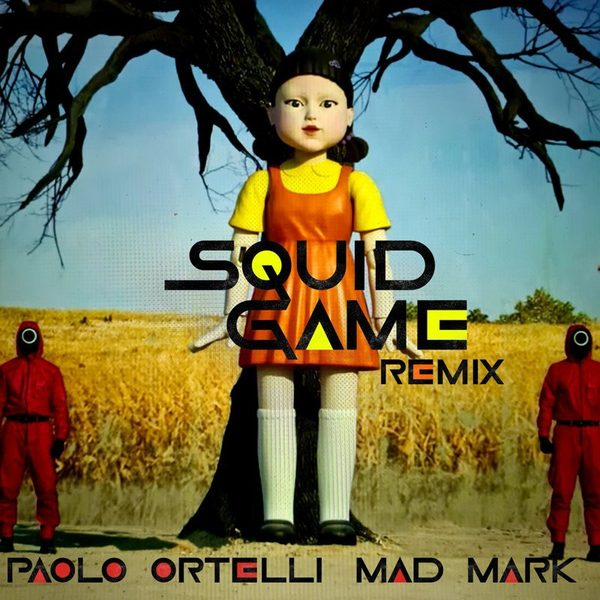

I 19 dischi
 1
Tell it to my heartMeduza feat Hozier
1
Tell it to my heartMeduza feat Hozier
 2
Without YouColdabank
2
Without YouColdabank
 3
You Are My LoveJude Frank,Cammora
3
You Are My LoveJude Frank,Cammora
 4
Hold OnKC Lights, Kye Stones
4
Hold OnKC Lights, Kye Stones
 5
If You Really Love SomebodyIllyus & Barrientos
5
If You Really Love SomebodyIllyus & Barrientos
 6
Drifting AwayAutograf & Kyle Reynolds
6
Drifting AwayAutograf & Kyle Reynolds
 7
Outta Control AgainMaurice West
7
Outta Control AgainMaurice West
 8
IsolateD.O.D
8
IsolateD.O.D
 9
In & OutTAI, Son Of 8
9
In & OutTAI, Son Of 8
 10
DopaminePurple Disco Machine, Eyelar
10
DopaminePurple Disco Machine, Eyelar
 11
CirclesChris Liebing & Ralf Hildenbeutel
11
CirclesChris Liebing & Ralf Hildenbeutel
 12
DreamingRudelies
12
DreamingRudelies
 13
StarlightAlmero
13
StarlightAlmero
 14
What's Your NameMorganJ
14
What's Your NameMorganJ
 15
Big LoveJack Wins
15
Big LoveJack Wins
 16
SummertimeMarc Benjamin, Ocean Roses
16
SummertimeMarc Benjamin, Ocean Roses
 17
Stranger DangerMordkey & Sonny Bass
17
Stranger DangerMordkey & Sonny Bass
 18
Need To Feel LovedReflekt, Delline Bass, Wh0
18
Need To Feel LovedReflekt, Delline Bass, Wh0

19 Squid GamePaolo Ortelli, Mad MarkLa tracklist
- 1 Tell it to my heart Meduza feat Hozier Universal-Island Records
- 2 Without You Coldabank Get Together Records
- 3 You Are My Love Jude Frank,Cammora Wh0 Plays
- 4 Hold On KC Lights, Kye Stones Sola
- 5 If You Really Love Somebody Illyus & Barrientos Ultra Records
- 6 Drifting Away Autograf & Kyle Reynolds Armada Music
- 7 Outta Control Again Maurice West Armada Music
- 8 Isolate D.O.D Armada Music
- 9 In & Out TAI, Son Of 8 Armada Music
- 10 Dopamine Purple Disco Machine, Eyelar Columbia Local
- 11 Circles Chris Liebing & Ralf Hildenbeutel Mute
- 12 Dreaming Rudelies Time Machine
- 13 Starlight Almero Sub Religion Records
- 14 What's Your Name MorganJ OH2 Records
- 15 Big Love Jack Wins Spinnin' Records
- 16 Summertime Marc Benjamin, Ocean Roses Heartfeldt Records
- 17 Stranger Danger Mordkey & Sonny Bass Heartfeldt Records
- 18 Need To Feel Loved Reflekt, Delline Bass, Wh0 Altra Moda Music
- 19 Squid Game Paolo Ortelli, Mad Mark Bootleg